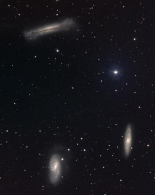
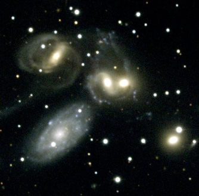

Galaxies are not generally found in isolation. Rather, most galaxies are themselves embedded in larger collections of galaxies called groups or clusters.
A galaxy group is a self-gravitating collection of anywhere between two and about a hundred luminous galaxies. Group structures vary widely – from fairly loose formations (loose groups) in which galaxies are separated by distances many times their size, to compact groups (for example Hickson compact groups), where the separation is similar to the size of the galaxies.
Although they have many properties in common with clusters (in particular, they possess dark halos and in some cases X-ray halos of hot gas), there are two important differences between the cluster and group environments:
- the brightest galaxy in the group environment is often a spiral galaxy rather than an elliptical brightest cluster galaxy.
- the velocities of galaxies (~200 km/s) within the group environment are lower than in the cluster environment. This means that mergers are more frequent in galaxy groups.
|

The M66 group of galaxies (the Leo triplet) is a loose group of galaxies.
Credit: NOAO/AURA/NSF |

Stephan’s Quintet is a Hickson compact group. At least two of the galaxies appear to be undergoing a merger.
Credit: NOAO/AURA |